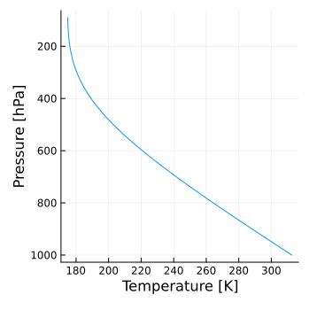
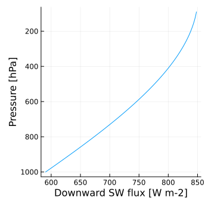
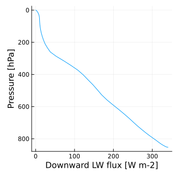
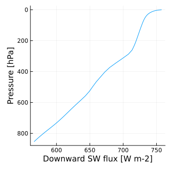

Example
A suite of concrete examples are provided here as a guidance for using RRTMGP. The example code is in the test folder.
Gray radiation
gray_atm.jl tests longwave and shortwave gray radiation. For longwave-only gray radiation (i.e., an atmosphere transparent to solar radiation), an analytical solution exists for the radiative equilibrium. gray_atmos_lw_equil computes radiative equilibrium with longwave-only gray radiation and compares the result against the analytical solution.
julia> include("test/gray_atm.jl")
julia> gray_atmos_lw_equil(TwoStream, Float64, Int, DA, Int(1))
*************************************************
Longwave test for gray atmosphere model - TwoStream; ncol = 1; DA = Array
Integration time = 40.0 years
t_error = 0.006105025574186129; flux_grad_err = 9.999832315088497e-6
Test PassedHere is the vertical profile of temperature (T_ex_lev) in radiative equilibrium:

gray_atmos_sw_test computes radiative fluxes with shortwave-only gray radiation and compares the result to the exact solution.
julia> include("test/gray_atm.jl")
julia> gray_atmos_sw_test(TwoStream, Float64, Int, DA, Int(1))
*************************************************
Running shortwave test for gray atmosphere model - TwoStream; ncol = 1; DA = Array
relative error = 5.776373821376071e-16
Test PassedHere is the vertical profile of the downward shortwave radiative flux (flux_dn_dir):

Gas optics
clear_sky.jl runs RRTMGP for specific clear-sky atmosphere states and compares the results to reference data. The atmosphere states and reference data are stored in netcdf files here.
julia> include("test/clear_sky.jl")
julia> clear_sky(TwoStream, SourceLW2Str, VmrGM, Float64, Int, array_type())
calling longwave solver; ncol = 100
0.597229 seconds (1.54 k allocations: 344.438 KiB)
calling shortwave solver; ncol = 100
0.449502 seconds (1.34 k allocations: 283.938 KiB)
=======================================
Clear-sky longwave test - TwoStream
max_err_flux_up_lw = 1.611013158253627e-5
max_err_flux_dn_lw = 1.6820160510633286e-5
Clear-sky shortwave test, opc = TwoStream
max_err_flux_up_sw = 4.354144800799986e-5
max_err_flux_dn_sw = 0.00018220861784357112
=======================================
Test PassedHere are the vertical profiles of downward longwave (flux_dn_lw) and shortwave (flux_dn_sw) fluxes for the first column:
 
Cloud optics
all_sky.jl runs RRTMGP for specific all-sky atmosphere states with arbitrary clouds and compares the results to reference data. The atmosphere states and reference data are stored in netcdf files here. The clouds are very idealized, with uniform condensate and particle size everywhere in the troposphere (though with different values for liquid and ice). Fractional cloudiness is not considered.
julia> include("test/all_sky.jl")
julia> all_sky(TwoStream, Float64, Int, DA, use_lut = true, cldfrac = Float64(1))
calling longwave solver; ncol = 128
1.357532 seconds (141.42 k allocations: 7.896 MiB, 25.54% compilation time: 100% of which was recompilation)
calling shortwave solver; ncol = 128
0.834152 seconds (60.46 k allocations: 3.683 MiB, 39.67% compilation time: 100% of which was recompilation)
=======================================
Cloudy-sky longwave test - TwoStream
Lookup Table Interpolation method
max_err_flux_up_lw = 8.359090770682087e-7
max_err_flux_dn_lw = 1.7562185803399188e-6
Cloudy-sky shortwave test - TwoStream
Lookup Table Interpolation method
max_err_flux_up_sw = 4.038832912556245e-8
max_err_flux_dn_sw = 1.6986234641080955e-7
=======================================
Test PassedHere are the vertical profiles of downward longwave (flux_dn_lw) and shortwave (flux_dn_sw) fluxes for the first column: